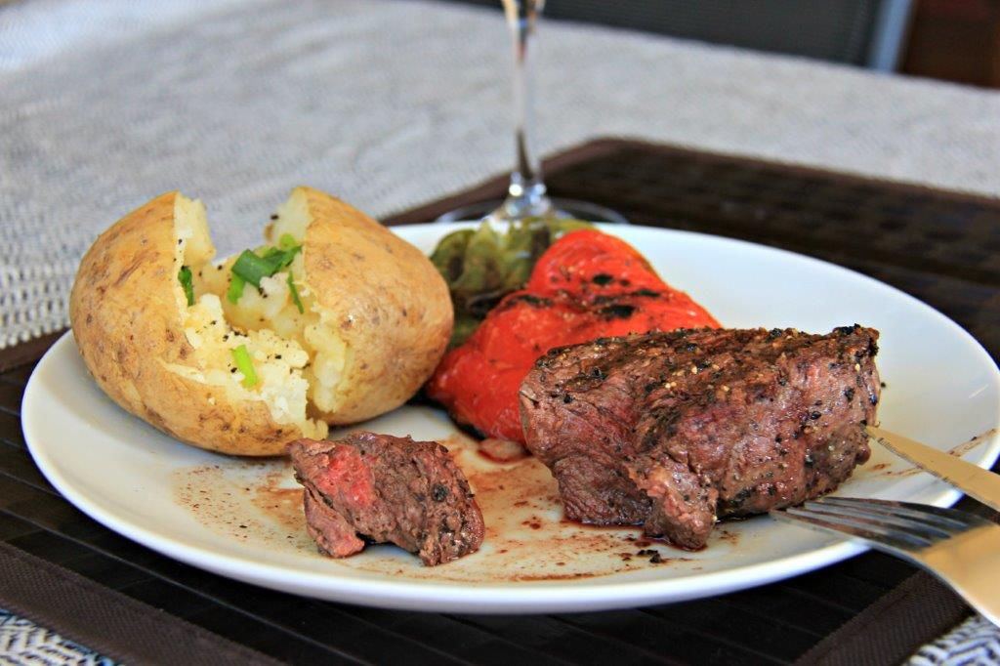
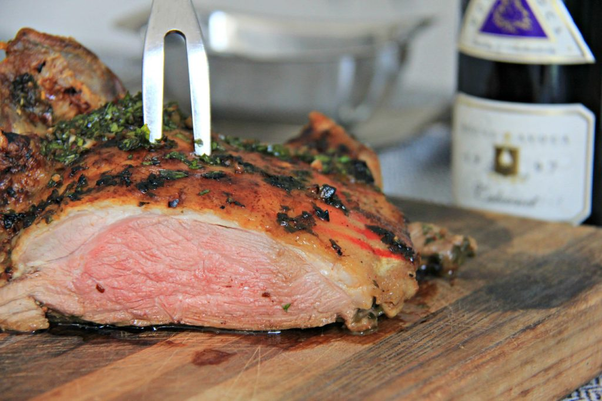
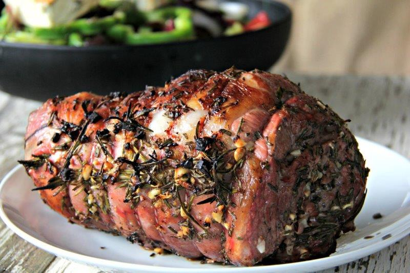
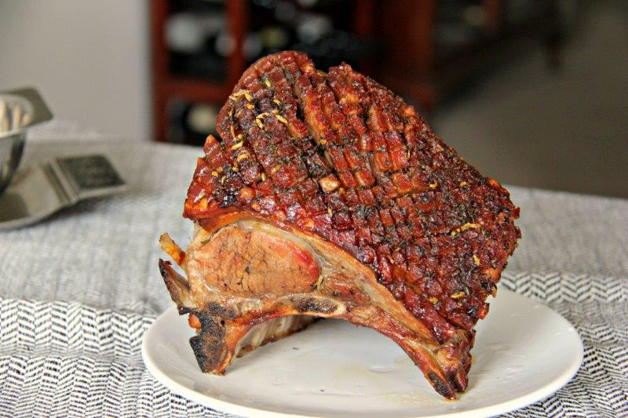
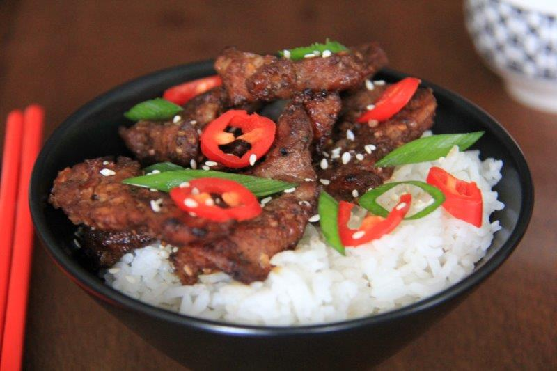
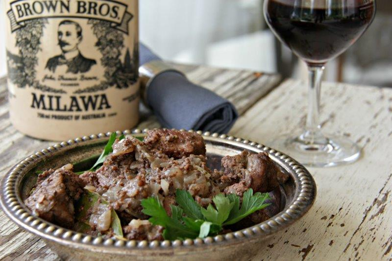
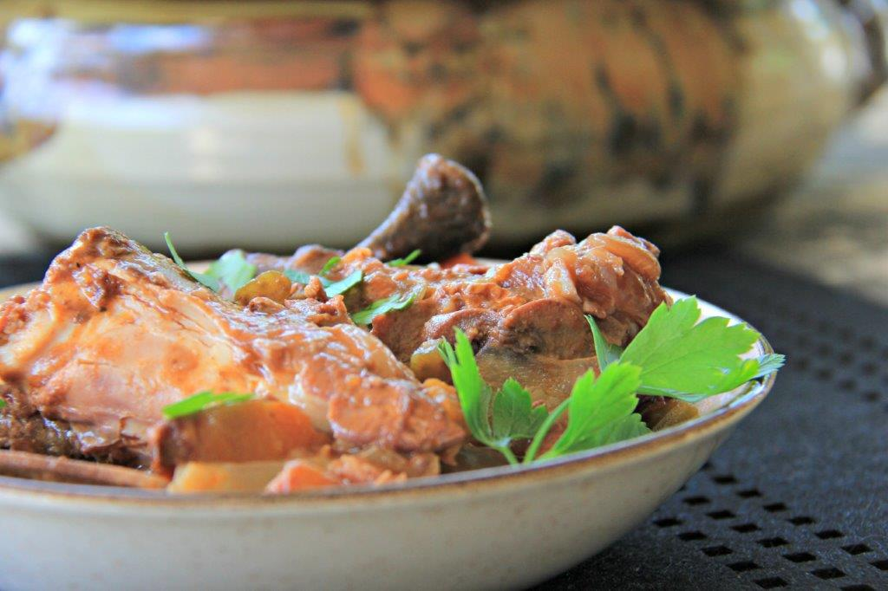

10 of the Most Popular Dinner Recipes from Around the World
Required Disclaimer: This post may contain products with affiliate links. If you make purchases using these links, we receive a small commission at no extra cost to you. Thank you for your support.
Non-veg
Beef: Popular Dinner Recipes from Around the World
1.Grilled Steak | Argentina
2.Beef Stifado | Cyprus

3.Lomo Saltado | Peru

Lamb: Popular Dinner Recipes from Around the world
4.Patagonian Style Lamb with Chimichurri Sauce | Patagonia
5.Lomo Saltado | Peru
6.Sultan’s Delight | Turkey
7.Greek Style Leg of Lamb Roast | Greece
8.Roast Pork with Crackling | Melbourne (Australia)
9.Marinated Five Spice Grilled Pork | Vietnam
10.Drunken Pork | Greece
Did you enjoy this roundup of popular recipes from around the world? If so, you might also enjoy our most popular seafood recipes from around the world. As well, here are our most popular vegetarian recipes and our most popular gluten free recipes from around the world. We will share what has been the most popular recipes here on Compass & Fork. The results might surprise you! For you adventurous eaters, I am sure there is something to tantalize on this list. Did you have a favorite from the site that didn’t make the list of the 10 most popular dinner recipes from around the world? Please let us know what your favorite is in the comments below. UPDATE: Didn’t find something for dinner tonight, you can find even more dinner ideas in 9 More of the Most Popular Dinner Recipes from Around the World a list with the most popular dinner recipes from Compass & Fork since this list published! It features other countries and recipes from around the world. Enjoy dinner! Please leave a comment for us if you have a favorite dinner recipe you don’t see on the list!